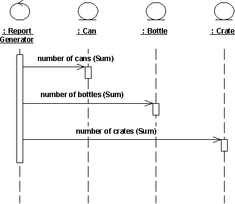
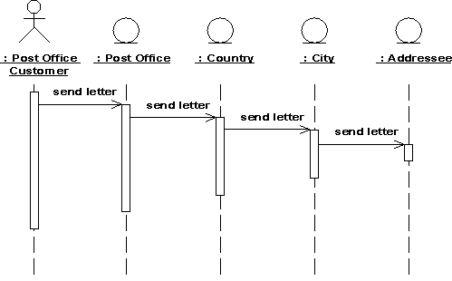
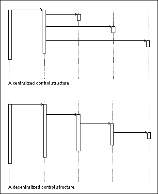

| Guideline: Sequence Diagram |
 |
|
| Related Elements |
|---|
IntroductionIn most cases, we use a sequence diagram to illustrate use-case realizations (see Work Product: Use-Case Realizations), i.e. to show how objects interact to perform the behavior of all or part of a use case. One or more sequence diagrams may illustrate the object interactions which enact a use case. A typical organization is to have one sequence diagram for the main flow of events and one sequence diagram for each independent sub-flow of the use case. Sequence diagrams are particularly important to designers because they clarify the roles of objects in a flow and thus provide basic input for determining class responsibilities and interfaces. Unlike a communication diagram, a sequence diagram includes chronological sequences, but does not include object relationships. Sequence diagrams and communication diagrams express similar information, but show it in different ways. Sequence diagrams show the explicit sequence of messages and are better when it is important to visualize the time ordering of messages. When you are interested in the structural relationships among the instances in an interaction, use a communication diagram. See Guideline: Communication Diagram for more information. Contents of Sequence DiagramsYou can have objects and actor instances in sequence diagrams, together with messages describing how they interact. The diagram describes what takes place in the participating objects, in terms of activations, and how the objects communicate by sending messages to one another. You can make a sequence diagram for each variant of a use case's flow of events.
A sequence diagram that describes part of the flow of events of the use case Place Local Call in a simple Telephone Switch. ObjectsAn object is shown as a vertical dashed line called the "lifeline". The lifeline represents the existence of the object at a particular time. An object symbol is drawn at the head of the lifeline, and shows the name of the object and its class underlined, and separated by a colon: objectname : classname You can use objects in sequence diagrams in the following ways:
ActorsNormally an actor instance is represented by the first (left-most) lifeline in the sequence diagram, as the invoker of the interaction. If you have several actor instances in the same diagram, try keeping them either at the left-most, or the right-most lifelines. MessagesA message is a communication between objects that conveys information with the expectation that activity will ensue; in sequence diagrams, a message is shown as a horizontal solid arrow from the lifeline of one object to the lifeline of another object. In the case of a message from an object to itself, the arrow may start and finish on the same lifeline. The arrow is labeled with the name of the message, and its parameters. The arrow may also be labeled with a sequence number to show the sequence of the message in the overall interaction. Sequence numbers are often omitted in sequence diagrams, in which the physical location of the arrow shows the relative sequence. A message can be unassigned, meaning that its name is a temporary string that describes the overall meaning of the message and is not the name of an operation of the receiving object. You can later assign the message by specifying the operation of the message's destination object. The specified operation will then replace the name of the message. ScriptsScripts describe the flow of events textually in a sequence diagram. You should position the scripts to the left of the lifelines so that you can read the complete flow from top to bottom (see figure above). You can attach scripts to a certain message, thus ensuring that the script moves with the message. Distributing Control Flow in Sequence DiagramsCentralized control of a flow of events or part of the flow of events means that a few objects steer the flow by sending messages to, and receiving messages from other objects. These controlling objects decide the order in which other objects will be activated in the use case. Interaction among the rest of the objects is very minor or does not exist. Example In the Recycling-Machine System, the use case Print Daily Report keeps track of - among other things - the number and type of returned objects, and writes the tally on a receipt. The Report Generator control object decides the order in which the sums will be extracted and written.
 The behavior structure of the use case Print Daily Report is centralized in the Report Generator control object. This is an example of centralized behavior. The control structure is centralized primarily because the different sub-event phases of the flow of events are not dependent on each other. The main advantage of this approach is that each object does not have to keep track of the next object's tally. To change the order of the sub-event phases, you merely make the change in the control object. You can also easily add still another sub-event phase if, for example, a new type of return item is included. Another advantage to this structure is that you can easily reuse the various sub-event phases in other use cases because the order of behavior is not built into the objects. Decentralized control arises when the participating objects communicate directly with one another, not through one or more controlling objects. Example In the use case Send Letter someone mails a letter to another country through a post office. The letter is first sent to the country of the addressee. In the country, the letter is sent to a specific city. The city, in turn, sends the letter to the home of the addressee.
 The behavior structure of the use case Send Letter is decentralized. The use case behavior is a decentralized flow of events. The sub-event phases belong together. The sender of the letter speaks of "sending a letter to someone." He neither needs nor wants to know the details of how letters are forwarded in countries or cities. (Probably, if someone were mailing a letter within the same country, not all these actions would occur.) The type of control used depends on the application. In general, you should try to achieve independent objects, that is, to delegate various tasks to the objects most naturally suited to perform them. A flow of events with centralized control will have a "fork-shaped" sequence diagram. On the other hand, a "stairway-shaped" sequence diagram illustrates that the control-structure is decentralized for the participating objects.
 A centralized control structure in a flow of events produces a "fork-shaped" sequence diagram. A decentralized control structure produces a "stairway-shaped" sequence diagram. The behavior structure of a use-case realization most often consists of a mix of centralized and decentralized behavior. A decentralized structure is appropriate:
A centralized structure is appropriate:
|

© Copyright IBM Corp. 1987, 2006. All Rights Reserved. |